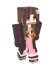

The Players of Season One
TBP Season One is the largest season to date in terms of individual player counts. This is in part due to the multiple communities that joined the server, as well as the lack of whitelist in the beginning leading to many people's friends, and friends of friends joining. In total over 70 unique player data files existed. This page will detail only the key players of the season.
Crutionix
Crutionix was one of the original and longest standing players of TBP Season One. He was known for owning and running the server, and his builds that were sometimes incredibly large and complex.
H4v0c_x_S4nTA


H4v0c_x_S4nTA was one of the original and longest standing players of TBP Season One. He was known for building farms and assisting in moderation duties. He was the first player to hit 1000 hours of playtime on TBP.
FriedOrange79

FriedOrange79 was one of the original and longest standing players of TBP Season One. He was known for his contributions to the big dick beacon, spawn super smelter and villager trading hall as well as his iron farm.
Glowe6958

Glowe6958 was one of the original players of TBP Season One and also the original moderator. He was best known for his home on the way to Mewffin Farms, near to where the Holiday Hills village was established.
Mewffin

Mewffin joined the server shortly after it's inception as the first viewer of a stream to play on the server. She was best known for not lighting up the area around her builds, developing hatred for her builds, moving away, building everything again in a different style, returning later and talking about how cute the original builds were. She was married to Crutionix in game and founded the Mewffin Isles.
Meagansan2000
Meagansan2000 was one of the original and longest standing players. She was known for her comically large sheep, collection of wool, and her map art creations.
OnyonSwomp

OnyonSwomp joined the server shortly after it's inception as a friend of Crutionix. He was best known for his builds at Onyon Bay and his work with OSL (OnyonSwomp Landscaping). He is also noteable for his identity crisis, often sporting a different name in the Discord.
ProbablyBuggolos
ProbablyBuggolos was the original founder of TBP Season One, originally called The Nutty Terrarium (synonymous with his Discord server). While he did not have a long history of actively playing on the server, he oversaw moderation and development of the server and was responsible for maintenance until it was handed to Crutionix in July 2019.
Robsoni2

Robsoni2 was one of the original players on the server. He was very influential in the early days of spawn, establishing the hotel and several other builds at spawn. He is best known for the spawn hotel, tina the donkey and the Church of Robsoni.
Eternaldoom

Eternaldoom was one of the last players to join the server but was one of it's longest standing players. He was best known for his Age of Empires base, Portugal. He has an incredible ability of replicating non Minecraft references into Minecraft.
FusionEdge

FusionEdge was a late entry to the server but one of it's longest standing players. He was most known for his edgy humour and villager trafficking. He was a key member in the Uwu-Cleanse of 2019 has put several businesses out of operation due to competitive pricing and practices.
Novahawk12


Novahawk12 was the second of a series of viewers to join the server after witnessing a Crutionix Stream. He was best known for causing mayhem as well as his Mossy Cobblestone Cult.
Red_DDawn

Red_Ddawn (Madhatterstaken) was one of the original and longest standing players of TBP Season One. They were best known for their horrifying skin choices. Unfortunately the original skin which featured a completely black face and body with a red and white overlay has been lost to time.
Riff__Raff__

Riff__Raff__ was one of the viewers that joined TBP Season One after a Crutionix stream. She was best known for her wholesome attitude, and her beautiful sprawling high detail and functional builds. Unfortunately her original skin is only saved in the Season 2 post office.
The_MCKid


The_MCKid was one of the last players to join the server. He is also one of several streamers to have streamed season one. He was runner up in the snow globe decorating competition.
Lord_Jontchagon

Lord_Jontchagon was one of the last players to join the server. He was best known for his Rock Hard concrete company.
Blue__Sparrow
Blue__Sparrow was one of the viewers to join the server alongside Novahawk12. He was best known for his ghost ship entry to the Halloween build competition, which won second place.
Witch_Bun
Witch_Bun joined the server alongside Lord_Jontchagon as his girlfriend. She was best known for her cute builds near Lord Jontchagon's base.
Osiris24
Osiris24 was a member of the server that joined after viewing a Crutionix stream. He was best known for pestering Crutionix for dark prismarine for his Asian architexture inspired forest base.
Whamborgini
Whamborgini was one of the youngest players on the server, but showed great maturity and dedication as a Crutionix viewer. He was best known for his great attitude and poor microphone quality.
The Forgotten Ones
The players that were banished, left, and didn't make the cut.
ahoboatemydog
Ahoboatemydog, otherwise known as Nathan, was a member of the server early on in it's existence. It is widely believed that he was responsible for letting the Grief take place. He was let go from the server after countless incidents.
CrispyBacon5678
CrispyBacon5678 was a member of the server for several months. He was issued a temporary ban for breaching several server rules but was able to return in future seasons. He was best known for selling nether items at "The Phoenix" and for perishing at Area 69.
Fontalite
Fontalite was a member of the server for several months. He was the second person to ever receive a permanent ban after several citations and issues including comments made that were deemed sexist. He holds the record for most rebrands to a store, changing the name 3 times.
UWUWUWUWUWUWUWU
UWUWUWUWUWUWUWU was one of the original members of the server and the first to receive a permanent ban. He was best known for his cringey behaviour and harassment of other members, and for the Uwu-Cleanse of 2019.